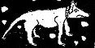

Tuesday, September the 7th, 2004
back to: title, date or indexes
One of the most common misconceptions in the world of cur-nomenclature is the idea that many dogs bear the name Fido because its Latin meaning (I trust or I am faithful) has some bearing on perceptions of canine personality. Dobson, for one, saw through this nonsense, as he explained in his out-of-print pamphlet On The Naming Of Curs As Fido : A Stern Corrective. He wrote:
What never seems to occur to people is that there is not one single recorded instance of any dog being called Fido prior to World War II*. This stark fact alone is surely all the evidence any rational person needs to realise that dogs are named Fido in honour of the Petroleum Warfare Department's successful development of the “fog, intensive dispersal of” system, otherwise known as FIDO. I cannot be bothered to go into the details of how, in 1944, boffins managed to make mist and fog vanish, for all the world like mediaeval magicians, but they did, God knows they did. Furthermore, the connection between dogs and fog is well known, as anyone who has studied some of my earlier pamphlets will know.

A fairly standard type of cur
* NOTE : Much as one admires the magisterial tone of Dobson's pronouncement, he is, of course, quite mistaken.
Hooting Yard on the Air, September the 8th, 2004 : “Escape From a Ship on Fire” (starts around 00:14)